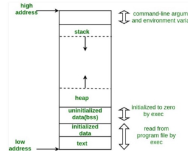

What are the five segments of memory?
When we write applications, files, or any logic that is typed in an editor and executed on the computer, the computer has to allocate memory for the program to run. The memory that is assigned to a program or application in a computer can be divided into five parts. The amount of memory that get’s assigned to an application depends on the computer’s architecture and will vary across most devices, but the variable that remains constant is the five parts of an application’s memory which are the heap, stack, initialized data segment, uninitialized data segment, and the text segment.
The initialized data segment consists of all the global and static variables that are initialized when a file gets compiled. The uninitialized data segment consists of all global and static variables that are initialized to zero or do not have explicit initialization in source code.
Stack and Heap
Programs will store variables and allocate memory either statically (stack) or dynamically (heap), both store in the computer's RAM.
The Stack
The stack is a segment of memory where data like your local variables and function calls get added and/or removed in a last-in-first-out (LIFO) manner. When you compile a program, the compiler enters through the main function and a stack frame is created on the stack. A frame, also known as an activation record is the collection of all data on the stack associated with one subprogram call. The main function and all the local variables are stored in an initial frame.
The advantage of using the stack to store variables, is that memory is managed for you. You don't have to allocate memory by hand, or free it once you don't need it any more. What's more, because the CPU organizes stack memory so efficiently, reading from and writing to stack variables is very fast.
A key to understanding the stack is the notion that when a function exits, all of its variables are popped off of the stack (and hence lost forever). Thus stack variables are local in nature. This is related to a concept we saw earlier known as variable scope, or local vs global variables. A common bug in C programming is attempting to access a variable that was created on the stack inside some function, from a place in your program outside of that function (i.e. after that function has exited).
Another feature of the stack to keep in mind, is that there is a limit (varies with OS) on the size of variables that can be stored on the stack. This is not the case for variables allocated on the heap.
To summarize the stack:
the stack grows and shrinks as functions push and pop local variables
there is no need to manage the memory yourself, variables are allocated and freed automatically
the stack has size limits
stack variables only exist while the function that created them, is running
Examples
Here is a short program that creates its variables on the stack. It looks like the other programs we have seen so far.
#include <stdio.h>
int main (int argc, char *argv[])
{
int a, b, sum;
a = 2;
b = 4;
sum = a + b;
printf("%d\n", sum);
return 0;
}
In the code above, we have one stack frame on the stack that holds the main function, along with the local a, b and sum variables. After using the printf() function the frame we created along with the local variables are only accessible in memory for the duration of the frame are no longer accessible after returning the 0 value from the function.
What happens with the stack when we call multiple functions? To illustrate the stack in it’s LIFO manner, let’s solve a problem using recursion. When we call multiple functions in our application, we use multiple stack frames in a last-in-first-out approach meaning that the last stack frame we’ve created on the stack is the first stack that will be released after the function is done executing its logic. Let’s go over an example of printing out the name “Holberton” recursively and show how our code affects the stack memory segment.
#include <gidna.h>
int main
{
puts_recursion("gidna");
return 0;
}
void puts_recursion(char *s)
{
if(*s == '\0')
putchra('\n');
putchar(*s);
puts_recursion(++s);
}
When we compile our code using gcc _putchar.c 0-puts_recursion.c 0-main.c , the compiler enters our program through int main(void) and creates a frame with the function int main(void) and _puts_recursion("Holberton") living on that frame as illustrated on the image above. When the compiler runs into the _puts_recursion() function, it calls that function and creates another stack frame on top of the previous stack frame where int main(void) lives. We are now in our second stack frame in our program and have entered in the _puts_recursion(char *s) function where *s is equal to 'H' and is only accessible in that stack frame. Because 'H' does not equal '\0' , we will continue with our function calls and execute the _putchar('H') function and enter into the same function _puts_recursion(++s). The argument ++s moves the memory address of the *s one byte because the size of a char is 1 byte on our machine, and now _puts_recursion is calling the function as _puts_recrusion('o') . Each time the _puts_recursion function is called, a new stack frame is put on the stack until we hit the terminating condition which is if (*s == '\0').
Every time a new stack frame is created, the stack pointer moves with it until it reaches the terminating condition. A stack pointer is a small register that stores the address of the last program request in a frame. When we hit the terminating condition, we execute our logic, then start to unwind the stack or pop off stack frames in the last-in-first-out manner until we reach out return(0) logic in the int main(void) function in our first stack frame.
If you don’t have a terminating case for the recursive example above, the stack will continue to grow in size adding additional stack frames on-top of each other, moving the stack pointer upward on each call, against the heap, which will be explained in the next section. In a recursive function , if there is no valid terminating condition, the stack will grow until you’ve completed consumed all the memory that’s been allocated for your program by the operating system. When the stack pointer exceeds the stack bound, you have a condition called stack overflow. Bad things happen when you have a stack overflow.
Let’s first refer back to the other four segments of your application’s memory which were the uninitialized and initialized data segments, text segment and stack segment. These four segments have a constant memory size during compilation. The memory size for these four segments is predetermined by your operating system before compiling your programs. When software engineers write programs that consume large amounts of memory from a machine, they have to consider where and how much memory is being consumed in their application.
The max stack size is constant and predetermined before a program is compiled. At Holberton, we use a Linux Ubuntu/Trusty64 distributions. To find information about the stack size and other neat limits, type the command below into your terminal.
ulimit -aWhere ulimit is a function that gets and sets user limits and the -a flag lists all the current limits.
# unlimit -a
bash: unlimit: command not found
[root@localhost c]# ulimit -a
core file size (blocks, -c) unlimited
data seg size (kbytes, -d) unlimited
scheduling priority (-e) 0
file size (blocks, -f) unlimited
pending signals (-i) 23407
max locked memory (kbytes, -l) 16384
max memory size (kbytes, -m) unlimited
open files (-n) 1024
pipe size (512 bytes, -p) 8
POSIX message queues (bytes, -q) 819200
real-time priority (-r) 0
stack size (kbytes, -s) 8192
cpu time (seconds, -t) unlimited
max user processes (-u) 23407
virtual memory (kbytes, -v) unlimited
file locks (-x) unlimited
If the stack is limited in size and a program needs more memory for it to execute, where can a software engineer pull memory from for his/her application? This is where the heap comes into play.
The Heap
The heap is the segment of memory that is not set to a constant size before compilation and can be controlled dynamically by the programmer. The heap is a region of your computer's memory that is not managed automatically for you, and is not as tightly managed by the CPU. It is a more free-floating region of memory (and is larger). To allocate memory on the heap, you must use malloc() or calloc(), which are built-in C functions. Once you have allocated memory on the heap, you are responsible for using free() to deallocate that memory once you don't need it any more. If you fail to do this, your program will have what is known as a memory leak. That is, memory on the heap will still be set aside (and won't be available to other processes). As we will see in the debugging section, there is a tool called valgrind that can help you detect memory leaks.
Unlike the stack, the heap does not have size restrictions on variable size (apart from the obvious physical limitations of your computer). Heap memory is slightly slower to be read from and written to, because one has to use pointers to access memory on the heap. We will talk about pointers shortly.
Unlike the stack, variables created on the heap are accessible by any function, anywhere in your program. Heap variables are essentially global in scope.
Stack vs Heap Pros and Cons
Stack
very fast access
don't have to explicitly de-allocate variables
space is managed efficiently by CPU, memory will not become fragmented
local variables only
limit on stack size (OS-dependent)
variables cannot be resized
Heap
variables can be accessed globally
no limit on memory size
(relatively) slower access
no guaranteed efficient use of space, memory may become fragmented over time
you must manage memory (you're in charge of allocating and freeing variables)
variables can be resized using realloc()
As a side note, there is a way to tell C to keep a stack variable around, even after its creator function exits, and that is to use the static keyword when declaring the variable. A variable declared with the static keyword thus becomes something like a global variable, but one that is only visible inside the function that created it. It's a strange construction, one that you probably won't need except under very specific circumstances.
We use memory from the heap when we don’t know how much space a data structure will take up in our program, when we need to allocate more memory than what’s available on the stack, or when we need to create variables that last the duration of our application. We can do that in the C programming language by using malloc, realloc, calloc and/or free. Check out the example below.
#include <stdio.h>
#include <stdlib.h>
int main(void)
{
int *ptr;
ptr = malloc (sizeof(int) * 1000);
/* You've now allocated 4000 bytes of memory from the heap to your application. You can freely use this memory as you please for your application */
/* Just make sure to free the memory when you are finished with it*/
free(ptr);
return 0;
}
As you can see, using malloc() to allocate memory on the heap and then using free() to deallocate it, is no big deal, but is a bit cumbersome. The other thing to notice is that there are a bunch of star symbols * all over the place now. What are those? The answer is, they are pointers. The malloc() (and calloc() and free()) functions deal with pointers not actual values. We will talk more about pointers shortly. The bottom line though: pointers are a special data type in C that store addresses in memory instead of storing actual values. Thus on line 5 above, the twice variable is not a double, but is a pointer to a double. It's an address in memory where the double is stored.
If you aren’t intentionally creating variables that last the duration of your application from the heap, you always want to release the memory back to the machine using the free() function. If you don’t release the memory using the free() function, you have memory that will persist throughout your program. If we do not release the memory from our program before terminating the application, our application has memory leaks. If your application has enough memory leaks, it can consume more memory than is physically available and can cause programs to crash. This is why we use a program called valgrind. Valgrind is easy to use and checks for memory leaks.
When to use the Heap?
When should you use the heap, and when should you use the stack? If you need to allocate a large block of memory (e.g. a large array, or a big struct), and you need to keep that variable around a long time (like a global), then you should allocate it on the heap. If you are dealing with relatively small variables that only need to persist as long as the function using them is alive, then you should use the stack, it's easier and faster. If you need variables like arrays and structs that can change size dynamically (e.g. arrays that can grow or shrink as needed) then you will likely need to allocate them on the heap, and use dynamic memory allocation functions like malloc(), calloc(), realloc() and free() to manage that memory "by hand". We will talk about dynamically allocated data structures after we talk about pointers.